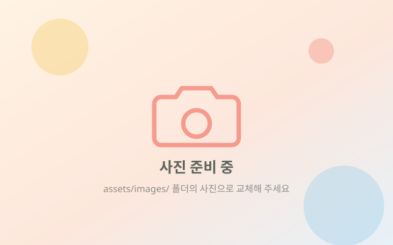

아이들이 행복한 세상이 희망있는 세상입니다.
위드프렌즈는 1998년 IMF 때 이웃사랑공부방을 시작으로 지역사회의 아동들과 함께해 왔습니다.
보살핌의 대상이 아닌 동반자, 친구로서

안녕하십니까?
사단법인 위드프렌즈 홈페이지에 오신 것을 환영합니다.
안녕하십니까? 사단법인 위드프렌즈 홈페이지에 오신 것을 환영합니다.
사)위드프렌즈는 1998년 IMF때 이웃사랑공부방을 시작으로 지역사회의 아동들과 함께해 왔습니다.
지금은 지역사회에 아동들을 대상으로 방과후 교실, 문화체험, 캠프활동, 지역사회 아동 연구 및 조사 사업 등 아동들이 건전한 사회의 구성원으로 자랄 수 있도록 지원하고 있습니다.
아이들은 우리의 미래이고, 희망입니다. 아이들을 위한 우리의 작은 움직임이 세상을 변화시키는 시작이 될 것입니다.
보살핌의 대상이 아닌 동반자, 친구로서 자신만의 꿈을 가질 수 있도록 위드프렌즈가 함께하겠습니다.
많은 관심과 격려로 부탁드립니다.
사)위드프렌즈 이사장
아이들의 오늘을 돌보고, 지역의 내일을 함께 만듭니다.
위드프렌즈는 아이들이 안전하게 배우고 꿈꾸며 성장할 수 있도록 지역사회와 함께합니다.
안전한 돌봄
방과 후 아이들이 안심하고 머무를 수 있는 자리를 지역 가까이에 마련합니다.
꿈을 찾는 배움
학습과 문화 체험, 캠프 활동으로 아이들이 자신만의 꿈을 찾도록 돕습니다.
지역과의 연결
학교와 관청, 민간 기업이 협력하는 사회 통합 안전망을 지역 안에 만듭니다.
투명한 운영
사업실적과 기부금 활용실적을 해마다 공시해 후원자와 지역에 알립니다.
about.html 의 #vision 영역)
위드프렌즈가 걸어온 길
1998년 이웃사랑공부방에서 시작해 2012년 11월 법인 허가증을 받았습니다.
2020년 이후 연혁은 기존 홈페이지에 게시되어 있지 않아 비어 있습니다.
자료가 확인되면 data/site.js 의 WF_HISTORY 에 이어서 추가해 주세요.
법인 조직
센터 이름을 누르면 해당 센터 안내로 이동합니다.